(i) x > 5 (ii) y ≤ −2 (iii) a ≥ 18 (iv) m ≤ 20 (v) 20 ≤ t ≤ 30
(i) True (ii) False (iii) True (iv) True (v) False (−6 < −5)
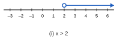
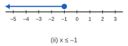
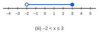
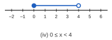
(i) x ≥ 1 (ii) x < 3 (iii) −3 ≤ x < 2 (iv) −1 < x < 4
(i) −1, 0, 1, 2, 3 (ii) −4, −3, −2, −1 (iii) 1, 2, 3, 4, 5
(i) x > 5 (ii) x ≤ 5 (iii) x ≥ 4 (iv) x < 6 (v) 2x > 6 → x > 3 (vi) 3x ≤ 12 → x ≤ 4
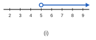
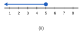
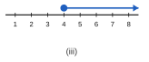
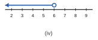
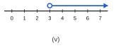
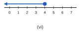
(i) Divide both sides by −2 and reverse the sign: x > −3
(ii) −x ≥ −3 → multiply by −1 and reverse the sign: x ≤ 3
(i) 3x − 6 < x + 4 → 2x < 10 → x < 5; greatest integer = 4
(ii) x + 1 ≥ 6 → x ≥ 5; smallest integer = 5
(i) 45n ≤ 500 → n ≤ 11.1… → maximum 11 pens
(ii) 70 + 40n ≤ 600 → 40n ≤ 530 → n ≤ 13.25 → maximum 13 boxes
(iii) n + (n + 1) + (n + 2) < 40 → 3n + 3 < 40 → n < 12.33… → largest n = 12; integers 12, 13, 14 (sum = 39)
(i) −2 < x ≤ 3 → −1, 0, 1, 2, 3
(ii) 2, 4, 6
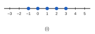
(i) 2(8 + x) < 30 → 16 + 2x < 30 → x < 7 (and x > 0, since a breadth must be positive)
(ii) 1, 2, 3, 4, 5, 6